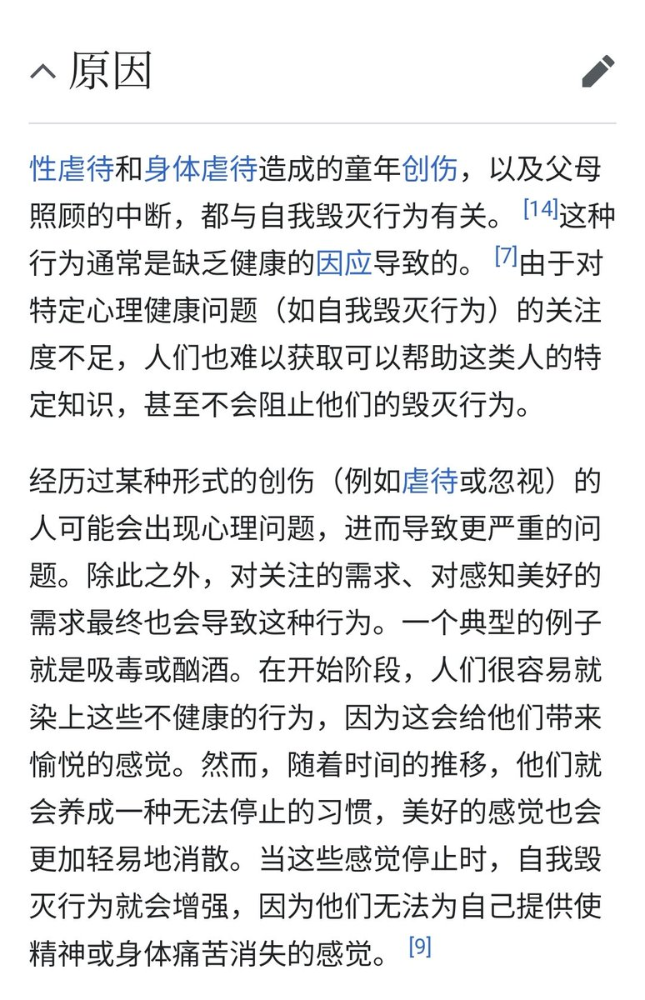

@overdosewiki @notThujaS 你是odwiki主，你经历了那么多人，应该能搞清楚哪些人是被od选择，而不是选择od的吧?



@notThujaS 我得没得过抑郁症跟你有啥关系，我用不用emoji跟是聊是骂有啥关系?
睁大你的眼睛看看这个贴子，再看看这个Wiki条目(自我毁灭行为)
喵宁是因为是留守儿童，才会有自毁行为！并发展为自毁倾向！跟是否抑郁没有关系！其他自毁式OD的人同理！
这些人需要帮助，而不是刻薄的讽刺。
https://t.co/JUS39d30yn https://t.co/SHP9Xf59rh
睁大你的眼睛看看这个贴子，再看看这个Wiki条目(自我毁灭行为)
喵宁是因为是留守儿童，才会有自毁行为！并发展为自毁倾向！跟是否抑郁没有关系！其他自毁式OD的人同理！
这些人需要帮助，而不是刻薄的讽刺。
https://t.co/JUS39d30yn https://t.co/SHP9Xf59rh
@SalviaSWC @notThujaS 鼠八婆是真不知道解离的认知危害神力呀。。这两吃成这样绝对保底人格解体了，到这时候自毁倾向都是药物给得了。可惜鼠八婆只会拿本本强奸后藤独，一点实践都没有 https://t.co/hBv62dPBGH